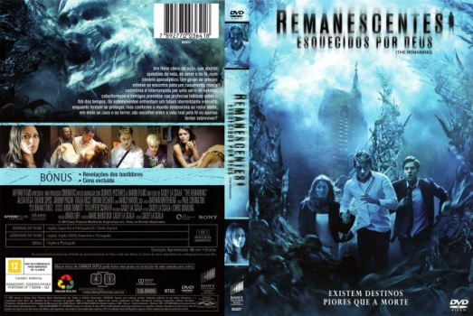

Remanescentes: Esquecidos por Deus (2014)


After the rapture, there are fates worse than death.

Avaliação (TMDb):


5.4/10 (217 votos)
Avaliação (Usuário):
Outro Título:The Remaining
País:United States, 88 minutos
Idiomas falados:Inglês, Espanhol, Português
Gênero(s):Suspense, Terror
Diretor(s):Casey La Scala
Codec:MPEG-2 (DVD)
Número: 4806
Sinopse:
Cinco amigos se reúnem em um casamento, mas a celebração logo é abalada por terríveis eventos apocalípticos forçando-os a repensar sobre a vida, o amor e a fé enquanto ao mesmo tempo devem escolher entre a redenção e sobrevivência.
Elenco:
Alexa PenaVega, Johnny Pacar, Shaun Sipos, Italia Ricci, Bryan Dechart, Liz E. Morgan, John Pyper-Ferguson, Kim Pacheco, Hayley Lovitt
Tipo de mídia: DVD R/RW,
Legendas: Inglês, Espanhol, Português, Sem Legendas
Alugado: Não
Tela: 1.85:1